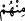
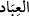

Ölmekle yanmaktan kurtulursun.
Dost uğruna ölmüş olanın kabri üzerinde ağlama;
“Elhamdülillâh” de, çünkü makbul olan odur.
Bütün bu söz, nakil ve rivayetlerin hepsine göre buradaki zâlim, mümindir. Burada
nefsine zulmeden kişi Âdem (a.s.), ortada olan kişi İbrahim (a.s.), hayırda yarışan da
Muhammed (s.a.)’dir, diyenin sözüne gelince, bir kere bu âyet, bu ümmet hakkındadır.
Âdem (a.s.) ve İbrahim (a.s.)’e şâmil değildir. Ancak “ zamiri, mutlak kullar demek
olan “ kelimesine râci olursa bu mânâ murâd edilebilir. Şayet, “Âdem (a.s.) nefsine
zulmetti”, denilir mi? diye sorulursa biz deriz ki: Âdem (a.s.) “Ey Rabbimiz! Biz
kendimize zulmettik. Eğer bizi bağışlamaz ve bize acımazsan mutlaka ziyan
edenlerden oluruz.” (el-A’râf 7/23) sözüyle nefsine zulmettiğini itiraf etmişse de yine
de Âdem (a.s.) hakkında edebe uygun olan bu gibi söz ve isnâdlardan dilimizi tutmak ve
böyle şeyler söylememektir.
Râğıb der ki, nokta kadar da olsa hakkı ve haddi aşmaya “zulüm” denir. Bu nedenle az
olsun çok olsun her türlü tecavüz ve haddi aşma zulümdür. Bundan dolayı büyük
günahta da küçük günahta da “nefsine zulmetti” denilir. İşte, her iki zulüm arasında çok
büyük fark olsa da hakkı ve haddi aştıkları için Âdem (a.s.)’a da İblis’e de “zâlim”
denilmiştir.
Keşfü’l-esrâr sahibi, “Allah’ın izniyle” ifâdesindeki “” harf-i cerrini yukarıda
zikredilen üç sınıfa bağlamış ve zâlimin zulmünün, muktesıdın orta yolu tutmasının ve
sâbıkın öne geçmesinin Allah Teâlâ’nın ilim ve iradesiyle olduğunu söylemiştir. Ancak
büyük müfessirlerin de beyan ettikleri gibi zâhir olan “”nın sâbık kelimesine
bağlanmasıdır. Yâni hayırda önde giden kendi başına gitmemiş, Allah’ın onu bu işe
müyesser ve muvaffak kılması ve hayır işini yapmaya imkan ve fırsat vermesiyle
olmuştur, demektir. Burada sâbık rütbesini elde etmenin yüceliğine ve buna ulaşmanın
zorluğuna dikkat çekilmiştir.
Kuşeyrî (k.s.) der ki, sanki Allah Teâlâ şöyle buyuruyor: “Ey zâlim! Başını kaldır, sen
her ne kadar zulmettiysen de ancak kendi nefsine zulmettin.” Yine “Ey sâbık! Sen de
başını eğ, sen de her ne kadar hayırda öne geçtiysen de ancak benim tevfikimle öne
geçtin.”
“İşte” ancak Allah’ın tevfikiyle elde edilebilecek “büyük fazîlet budur.”
Böyle büyük fazîlet, ancak Allah Teâlâ’nın tevfik ve inayetiyle elde edilir. Yahut
seçkin kullara bu kitabı mîras olarak vermek büyük fazîlettir. Bu fazîlet ümmetin bütün
ferdlerine göredir. Fazîlet oluşu ise Kur’an’ın bütün ilâhî kitapların en üstünü, bu
ümmet-i merhûmenin de geçmiş bütün ümmetlerin en üstünü oluşuna göredir. et-
Te’vîlâtü’n-Necmiyye’de der ki bu, seçilmiş kul olmakta, kitabın kendisine mîras olarak
verilmesinde ve cennete girmekte zâlimin sâbık ile beraber zikredilmesi, Allah
Teâlâ’nın hikmetinin inceliklerindendir. Ayrıca Allah Teâlâ’nın burada “fazl-ı azîm”
değil de “fazl-ı kebîr” buyurmasında da bir incelik vardır. Zira zâlim hakkında “fazl-ı